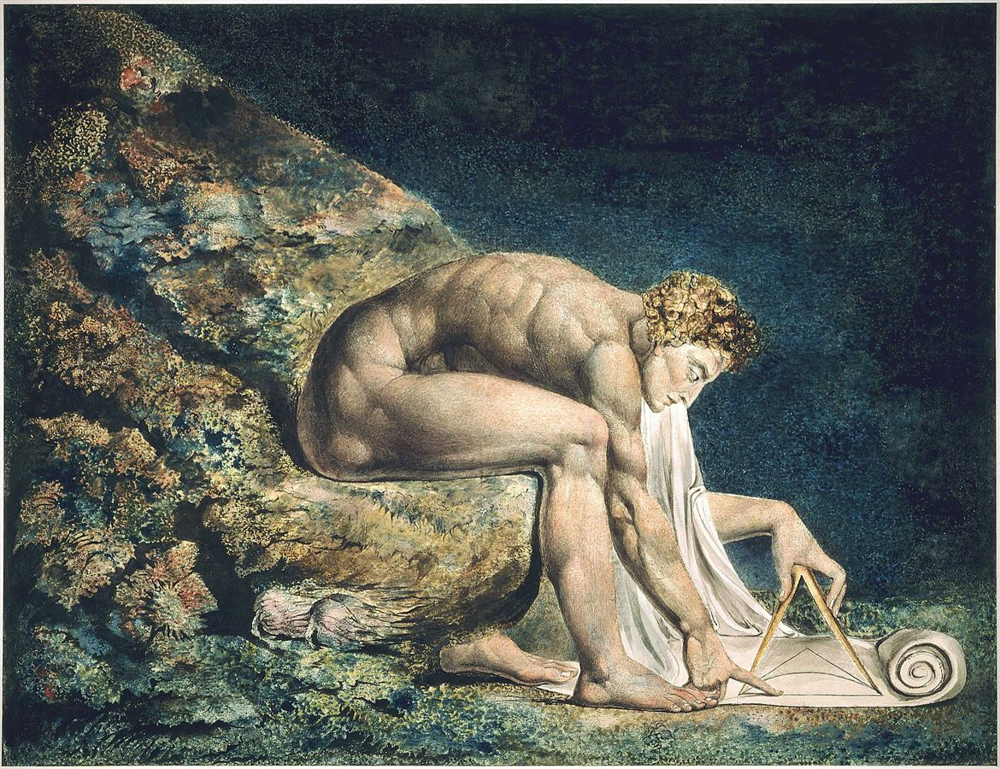

Cogito?William Blake, Newton, 1795
A critical reading of the earlier answers to the anatomy question, and the research prompt that led to the essay on getting it right without a hidden world — four questions and their answers
The earlier answers got the anatomy right: gravity is a posit fixed by its role, not a generalization of mass and distance. Their load-bearing error was to let predictive success certify the posits after conceding that a trained network predicts just as well without them. What prediction certifies is the shared regularity-tracking layer; whatever makes posits special has to be argued on other grounds.
This conversation takes the chat in which the project began, pasted in full, and reads its answers critically. It then judges whether the four existing research essays answer the anatomy question, writes a new research prompt aimed at the thread the dialogue actually reached, and answers a research tool’s three clarifying questions.
Charith’s questions are given as he wrote them, with grammar and spelling corrected and nothing else changed. Claude’s answers are reproduced as given; a note of a file Claude read before answering is left out. The research prompt in §03 is given in full in a section you can open.
The four exchanges in order, each with where it landed. The gold link is the critique that set the next stage of the project.
The anatomy question is asked again, the earlier answers are audited, and the existing research is judged against the question.
The anatomy question again, and a critical reading of the earlier answers to it.
This is a strong conversation — well above the median for this material — and the question you opened with gets answered correctly and early. Gravity is not derivable from mass and distance; it’s a Layer-2 posit fixed by its role in a constraint network, and the three-mechanism decomposition of “conceptual interaction” (Ramsey-Lewis referential / Hilbert combinatorial / Sellars-Brandom inferential) is the best single thing 4.7 produced. That tripartite structure is correct, cleanly organized, and not something most expositions get right. The escalation into Newman, Psillos, and Wigner is real depth, not name-dropping.
But the arc has one load-bearing crack, plus several sharper philosophical slips a careful reader shouldn’t let pass.
The structural fault is that “predictive overhang” cannot survive the ML turn, and 4.7 only noticed when you forced it. In the circularity answer, predictive overhang is made the thing that rescues Newton’s definitional circle from viciousness — the equations predict beyond what was built in, so the loop has external traction. Fine as far as it goes. But the ML answer then concedes that prediction is not proprietary to theory: a network reproduces the same overhang (Kepler’s laws emerge, novel trajectories predicted) while committing to no posit at all. Put those side by side and the first claim dies. If predictive overhang is shared with a posit-free model, then it vindicates the regularity-tracking substrate theory and ML have in common — not the posits. 4.7 used “the circle is non-vicious” as though it meant “the posits are doing real work,” but those are different claims. A non-vicious circle shows the theory-as-a-whole isn’t empty; it says nothing about whether force/gravity-as-posits earn their keep over a black box. You caught the tail of this in your point 1, and you were right. The version that survives is the one reached only at the end: prediction was never what made gravity-talk special, so whatever does — unification, transfer, inferential role — has to be argued on separate grounds the conversation never actually secured. The early emotional shape (“the overhang is what makes it real”) gets quietly retracted by the later answers without anyone saying so.
The sharper slips:
The “Saturn V is a stronger arche-fossil than Meillassoux” claim is backwards — the clearest error in the transcript. The arche-fossil’s whole force is temporal: ancestral statements were true before any correlation existed, which correlationism can’t comfortably hold. Inter-theoretic convergence (Newton ≈ Einstein on the same observables) is a different animal — it’s underdetermination, and underdetermination if anything feeds correlationism rather than defeating it. Two schemes agreeing doesn’t get you behind the schemes; both could be human constructions that coincide. Convergence shows at most that something scheme-transcendent is being tracked, defeasibly — weaker than ancestrality, not stronger, and exactly the reading the correlationist welcomes. 4.7 fused two distinct arguments and inverted the dialectical valence. (Pure “clever connection trap” — the analogy felt illuminating and never got stress-tested.)
Newton → Einstein is cited as evidence for structural preservation when it’s one of the worst cases for it. The friendly case is Fresnel → Maxwell, where the amplitude equations carry straight over. 4.7 leans repeatedly on “the inverse-square law emerges as a limiting case of Einstein” as if it were that kind of continuity. It isn’t. GR’s structure — pseudo-Riemannian geometry, the field equations — is radically unlike Newton’s, and the concept doing the most work for you, gravitational force, has no correlate at all in GR; it’s a coordinate artifact. What’s recovered in the limit is a set of predictions in a regime, not the structure. The example conflates predictive-limit-recovery with structural-preservation — precisely the distinction the rest of the conversation depends on.
Your mS regress got over-credited. It’s sharp, and the verification-principle analogy is evocative, but “your argument lands” skips the distinction that decides whether it does. Epistemic structural realism (Worrall) is a selective realism — about what to be realist about inside mature physical theories — and never claimed that all knowledge is structural. So “establishing that structure is preserved requires non-structural historical knowledge” is no contradiction for it; the historiography was always ordinary empirical knowledge, outside the thesis’s scope. Your argument does bite on ontic SR (Ladyman/French) and its totalizing “structure is all there is” — there “how do you know that except by non-structural means?” is real pressure. 4.7 ran the objection flat when it discriminates: serious for OSR-as-metaphysics, near-harmless for epistemic SR. And the verification-principle parallel is looser than it sounded — that principle self-refutes as a universal claim about meaning failing its own test, whereas yours is an epistemic challenge to an ontological thesis. Suggestive, not isomorphic.
The noumenon-deflation finale is the best-written passage and also where it lets its own best objection slide. The strong/weak fork is right, and routing you to the weak version (regularities are real, the noumenal backstop is the confusion) is fair reconstruction. But watch the induction problem. 4.7 charges the strong version with “abolishing the noumenon does nothing to solve induction” — correct — then never charges the weak version, which inherits it whole. A world that is “just the mosaic of regularities, no hidden ground” still owes an account of why the mosaic is projectible, why “regularity” carries the modal/counterfactual weight we lean on every time we predict. That is Hume’s own problem of the necessary connection, and deflating the noumenon renames it rather than dissolving it. The weak view doesn’t escape the difficulty; it stops calling it by its name.
The finale’s assimilation is a category error. It glues “ontic structural realism stripped of metaphysics” to “Humean supervenience” as neighbors. They’re closer to opposites on the one axis that matters: OSR makes relations/structure fundamental; Humean supervenience makes intrinsic local matters of fact fundamental and treats structure as supervenient — Humeanism is famously hostile to irreducible structure. Landing you “between deflated-OSR and Humean supervenience” sits you between two views that disagree about the very thing — the reality of relations — you’d need settled. Nietzsche and later Wittgenstein get folded in too; the convergence is real at “drop the true-world-behind-appearances,” but their reasons and commitments don’t coincide, and the smoothing hides it.
A tool was sitting right there and went unused. Given how much Ramsey-Lewis apparatus was already deployed, the natural instrument for your final move is Carnap’s internal/external distinction: “does gravity exist over and above all its effects?” is an external question, and on that view it’s not a hard question but a defective one, while internal questions are settled framework-relatively. That is the rigorous skeleton of exactly the deflation you were reaching for, and 4.7 gestured at “positivism” without deploying it.
The causes/reasons binary is too clean — and it cuts against your own work. “ML lives in the space of causes, Newton in the space of reasons” is elegant but probably false as a sharp dichotomy. Whether trained networks develop internal structured representations that can be probed — world-models rather than lookup tables — is an open empirical question, and it’s the one DESCARTES is built around (contested, not settled either way). If ML occupies an intermediate position the binary collapses, and the more interesting claim surfaces: whether ML “merely predicts” or “represents structure” is itself empirical and unresolved, folding straight back into the structural realism debate rather than standing outside it. A bright line was drawn where the line is the thing in dispute.
Minor but telling: there’s an uncleaned self-correction left in the ML answer — “cuts particularly hard against position (a) — actually no, it strengthens (a)” — the kind of artifact that signals the apparatus was being assembled live rather than seen whole. Across turns the same machinery gets re-laid from scratch each time; economical building would have freed room for the harder moves. And the tone runs warm to the point of flattery (“sharper than most of the literature manages”) — you’re well past the level where that helps, and it dulls the critical edge the material wants.
Strip the slips and the real terminus is sound and worth holding: prediction is a property of the shared regularity-substrate, not of posits; the posits’ claim to reality rests on unification/transfer/inferential fertility, which prediction doesn’t certify and which were never independently secured here; and your closing question — whether the pull toward “the theory got it right” (versus merely working) is a buried insight we keep suppressing or a grammatical illusion we’re finally seeing through — is correctly posed. The move I’d make next is to stop treating it as one question. “Right” is plausibly doing two separable jobs: tracking the invariants that survive theory change (defensible, structural, modest) and naming correspondence to a hidden ground (the noumenal job your deflation targets). The pull is sticky precisely because ordinary “right” fuses them. Pry them apart and you keep the first while dissolving the second — which is where your two final points were converging, and what 4.7’s tidy ecumenism kept just out of focus.
Whether the existing research answers the anatomy question.
No — but not because they’re thin. They’re aimed at a different question. All four are built around the science-humanities isomorphism (the research prompt’s target), and on that they’re more than sufficient. But your opening question — the anatomy of an abstract theory, how gravity-as-posit relates to mass, whether it’s derivable, how the concepts interact structurally — is a narrower thing those essays only pass through on their way somewhere else.
And the part that’s actually live now isn’t in any of them. The conversation itself drove past these four: the ML demotion of prediction (prediction validates the shared regularity-substrate, not the posits), the Carnap internal/external deflation, and above all the noumenon-deflation endgame — the question of whether “the theory got it right” fuses two separable jobs (tracking invariants vs. correspondence to a hidden ground). None of the four engage that, because it postdates the prompt they were answering.
So the move isn’t more research of the same kind — you’d just get a fifth essay converging on the same humanities verdict. It’s a new, focused pass on the thread the dialogue actually reached.
A prompt for an argument about what survives of “getting it right”, and brief answers to a research tool’s questions about it.
A prompt for building an argument, not surveying a literature.
This frontier is argument-construction, not literature survey — so the prompt has to point the tool at building a position the four prior essays ducked, with the literature as scaffolding rather than the deliverable. Here it is.
This is not a literature survey, and it is not a request to re-establish the science/humanities isomorphism (that ground is already covered). It is a request to construct and defend an original argument through a specific dialectic, using the existing literature as scaffolding and as a source of objections to be answered. Retrieval-only output will fail. The deliverable is a synthetic essay that takes a position and pays its costs, not a map of who-said-what. Where the argument is original (it is, in several places), say so and reason it out rather than searching for a citation that does not exist.
Two linked results force a reorganization of the scientific-realism debate:
The demotion of prediction. A theory’s predictive success — including novel prediction and inductive projection — is not proprietary to its theoretical posits. A posit-free function approximator (a trained neural network) can reproduce the same empirical adequacy and the same projective reach (Kepler’s laws emerging from data, AlphaFold, neural weather models that outperform physics-based ones) while committing to no posit whatever. Therefore predictive success certifies only the regularity-tracking substrate that theory and the posit-free predictor share; it cannot, by itself, license the inference from “the theory works” to “force/field/gravity is real.”
The deflation of the noumenon. The residual intuition that a successful theory “got it right” (and not merely “got it working”) appears to fuse two separable jobs: (a) tracking the invariants that survive theory change, and (b) corresponding to a mind-independent ground sitting behind the regularities. The intuition is sticky precisely because ordinary use of “right” welds (a) to (b). If (b) can be deflated away while (a) is retained, the anxiety that has driven the realism debate may dissolve rather than be resolved.
The question the essay must answer: After the predictive criterion is demoted and the noumenal criterion is deflated, what content remains in the claim that one theory is closer to right than another — and is that residual content enough to do the work we actually need “right” to do (ground error, distinguish phlogiston from gravity, underwrite the no-miracles intuition, support counterfactuals)? Defend a positive answer, and state precisely what it costs.
1. Formalize the demotion of prediction, and test it against Hempel. Distinguish sharply the empirical adequacy of a theory from its theoretical content. Build the reductio: if predictive success certified posits, a posit-free predictor making the same predictions would certify them too — absurd; so prediction certifies only the shared substrate. Then connect this to the classical apparatus: Craig’s theorem (1953) established deductive eliminability of theoretical terms; Hempel’s resolution of the theoretician’s dilemma rested on the claim that inductive systematization cannot be Craig-eliminated — theoretical posits earn their keep through inductive fertility a flat observational language cannot replicate. The ML case is precisely a posit-free system achieving inductive projection. Does ML therefore threaten Hempel’s resolution, or does it leave it standing? Argue this carefully — it is the technical crux of sub-argument 1. (Candidate move: the network’s weights are an inductive systematization, just an opaque, non-Craigian one — which would mean Hempel’s point survives but stops being a point about posits and becomes a point about compression/projection, achievable many ways. Test whether that move holds.)
2. The “more” question. If prediction does not certify posits, identify what could. Candidates: explanatory unification (Friedman 1974; Kitcher 1981/1989), cross-domain inferential transfer, fertility, and the Sellars–Brandom inferential-role considerations. For each, ask the decisive question: does it survive the same ML challenge? Can a posit-free predictor unify, transfer across domains, or license inferences in the space of reasons? At present it largely cannot — but determine whether that incapacity is principled or merely contingent. This is an empirical-and-open question about whether trained networks develop probeable structured internal representations (world-models) versus remaining sophisticated lookup; treat it as genuinely unsettled, not as settled in either direction, and show how its resolution either rescues the posits’ special status or collapses it. Do not assert a clean “ML lives in the space of causes, theory in the space of reasons” dichotomy as though established — interrogate it; the dichotomy may be drawing a bright line exactly where the line is in dispute.
3. The internal/external deflation, and Quine’s attack on it. Deploy Carnap’s “Empiricism, Semantics, and Ontology” (1950) internal/external distinction as the rigorous skeleton of the deflation: “Does gravity exist over and above all its effects?” is an external question, and on Carnap’s view not a hard question but a defective one — a pseudo-question — while internal existence questions are settled framework-relatively. Then confront the standard objection head-on: Quine (“On Carnap’s Views on Ontology,” 1951; and the analytic/synthetic argument of “Two Dogmas”) attacked the very distinction the deflation needs, by denying a principled analytic/synthetic and therefore internal/external boundary. Since the dialectic this essay inherits already accepts Quinean holism, this is a potential self-inconsistency that must be resolved: can the Carnapian deflation survive in a Quinean setting, or must the deflation be reconstructed on non-Carnapian (e.g. pragmatist or Wittgensteinian) grounds? Do not gesture at “positivism”; either deploy Carnap precisely or replace him with something that does the same work under holism.
4. The split in “right” — the core original move. Argue that the success-intuition fuses invariant-tracking (a) and noumenal-correspondence (b), and adjudicate whether they can be pried apart. Under (a) alone, what does “right” reduce to, and is the residue enough? This requires engaging the theory of truth directly: contrast robust correspondence (the realist’s truth) with deflationary truth (Horwich’s minimalism) and epistemic/superassertibility accounts (Wright). Is a deflationary theory of truth what this position needs — and can a deflationary truth-predicate still do the jobs the essay demands of “right” (grounding the difference between phlogiston and gravity, sustaining the no-miracles intuition)? Show whether (a)-only “rightness” is a stable resting place or collapses into either full correspondence or bare instrumentalism.
5. Structural realism, stated correctly. Three repairs the prior essays got wrong:
6. The bill the deflation cannot dodge: projectibility. The “weak” deflation — the regularities are real, there is no hidden ground beneath them — still owes an account of why the mosaic is projectible, why “regularity” carries the modal/counterfactual weight every prediction leans on. This is Hume’s problem of the necessary connection, renamed, not solved. Engage Goodman’s new riddle (grue) and the laws-of-nature debate: the Humean best-system analysis (Lewis) versus anti-Humean necessitation (Armstrong, Dretske, Tooley) and primitivism (Maudlin). Determine whether deflating the noumenon makes the projectibility problem worse, better, or unchanged — and resist the temptation to count “renaming” as “dissolving.”
7. The forced choice the prior synthesis papered over: OSR vs. Humean supervenience. The position “regularities are real, no hidden ground” cannot remain neutral between ontic structural realism (relations/structure fundamental) and Humean supervenience (intrinsic local matters of fact fundamental, structure supervenient — and Humeanism is famously hostile to irreducible structure). These disagree about the one thing the position most needs settled: the reality of relations. The essay must either pick a side or articulate a defensible third option — it may not, as earlier treatments did, list them as compatible neighbors.
8. The arche-fossil, through the right door. Correct a tempting error: inter-theoretic convergence (Newton ≈ Einstein on the same observables) is underdetermination, not ancestrality, and if anything it feeds correlationism rather than defeating it — two schemes agreeing does not get you behind the schemes, and both could be co-incident human constructions. The genuine anti-correlationist resource in Meillassoux is temporal: ancestral statements that were true before any correlation existed. Establish whether the deflated-regularity position has anything to say to correlationism — specifically, whether “the regularities obtained before us” survives on this view, and whether that is the same move as Meillassoux’s mathematized primary qualities or a different one. Do not present convergence as a strengthened arche-fossil.
Build toward, and defend, a positive thesis (or a reasoned refusal of one). The candidate terminus the dialectic points to: structurally realist about the invariants that survive theory change; deflationary about the noumenal ground; with the residual “rightness” of a theory = (i) capture of those invariants + (ii) inferential and unifying fertility, both certified by criteria other than bare prediction, and neither requiring correspondence to a hidden substance. Then state the costs without flinching:
If the candidate terminus does not survive the essay’s own pressure, say where it breaks and what replaces it.
A synthetic philosophical essay, 4,000–6,000 words, that:
A reader with strong philosophical literacy — comfortable with Kant, Sellars, the analytic philosophy of science, the structural-realism debate, deflationary truth, the Humean/anti-Humean laws debate, and Meillassoux’s correlationism. Do not reintroduce basics (induction, posit, theory, the no-miracles argument, the pessimistic meta-induction); assume them and build.
Two things on running it.
First, the tool matters more than usual here. The four essays you already have came out well because the prompt that generated them was a survey task — retrieve, organize, synthesize — which retrieval-heavy deep-research tools do competently. This one is an argument-construction task, and a tool that mostly retrieves will underperform: it’ll find the Carnap and Horwich and Maudlin literature and lay it out, but it won’t run the reductio in sub-argument 1, or adjudicate whether Psillos is defanged post-deflation, or resolve the OSR/Humean fork — because those moves aren’t in the literature to be found. They’re the work. So I’d lean toward a reasoning-heavy run (Gemini Deep Research will retrieve well but may flatten the argument; a long-form reasoning model given the prompt as a writing task may construct better). If your tool lets you, run it once each way and steal the best of both — that’s what produced the strongest of your existing four.
Second, on staging. The prior prompt benefited from being run in pieces, and this one does too, but the cut is different. Don’t split it by topic. Split it by the two halves of the spine: run sub-arguments 1–4 first (the demotion and the deflation — the destructive half), get that solid, then feed the result back and run 5–8 plus the synthesis (the reconstruction). The reason is that 5–8 only make sense once the deflation in 4 is on the table — sub-argument 5(iii), whether deflation defangs Psillos, literally can’t be assessed until 4 has deflated reference. Running it all at once tends to produce an essay that asserts the deflation and the reconstruction in parallel without letting the first actually do its work on the second — which is the exact failure mode your fifth essay would otherwise repeat.
One caution worth holding: the candidate terminus in the prompt is a target, not a foregone conclusion. The honest risk is sub-argument 6 — projectibility. If the essay does its job there, it may find that deflating the noumenon while keeping projectible regularities is unstable, because the modal weight regularities carry is exactly the “something more than the mosaic” the deflation tried to deny. If that’s where it lands, that’s not a failed run — that’s the genuinely interesting result, and it’s the point where this connects back to your correlationism work rather than tidying it away.
A research tool’s clarifying questions, answered in a few words.
Quick verdicts, each leading with the call.
Spectrum — but split it precisely. The demotion itself is permanent, because it’s a reductio from a single actual case: one posit-free predictor matching empirical adequacy is enough to sever prediction from posit-certification, and that severing is logical, not hostage to future architectures. The fidelity question — whether the posits’ “more” survives — is the spectrum. Keep them apart: that’s sub-argument 1 (permanent) versus sub-argument 2 (graded). Collapsing the demotion into the spectrum is exactly the trap, because it makes the whole argument contingent on a fact it doesn’t need.
Superassertibility (Wright), framed as most-viable-given-constraints, not definitive. It’s the only one of the three whose machinery directly cashes out the (a)-job: “tracks invariants that survive theory change” just is warrant that stays assertible under every improvement of information. Horwich is too thin to mark the phlogiston/gravity difference — disquotation treats both alike — and Brandom drags in a full inferentialist apparatus the essay doesn’t need. So: lean Wright, but present it as live-best, since committing definitively to a theory of truth would unbalance a 4–6k essay on a genuinely contested point.
A third option is allowed — but only if it resolves or honestly dissolves the fork, never if it evades. Primitivism about projectible regularities (Maudlin-style) is the strongest exit and the elegant one, because it discharges sub-argument 6 and 7 in a single move: take the law/regularity as primitive — anti-Humean without being OSR. The hinge-proposition view is permissible, but it dissolves the fork rather than choosing, via the same deflationary move as sub-argument 3, so it must be flagged as dissolution (not resolution) and watched, since it risks over-deflating the metaphysics to nothing. The one thing still banned is the prior essays’ sin: listing OSR and Humeanism as compatible neighbors.
Note the payoff in 3: if the essay takes the primitivist exit, sub-argument 6 stops being a cost and becomes the load-bearing commitment — which is cleaner, but it’s also the point where “deflationary about the noumenon” comes under real strain, because a primitive law that governs the mosaic is uncomfortably close to the “something more than the regularities” the deflation set out to deny. Worth letting the essay feel that tension rather than smoothing it.
The questions are Charith’s, corrected for grammar and spelling only; question 4 relays a research tool’s questions. The answers are Claude’s, as given in the conversation.